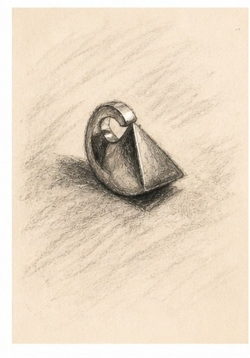

Each horn begins as a drawing on paper, then is carved by hand in wax, one curl at a time, until the spiral sits right in the palm.

Every Maçon piece starts here, as a sketch. Some objects are made to be looked at. This one was made to be listened for.
Wild things have always been drawn to music. The trick is knowing which song sends them home.
In the story Hannah grew up with, a girl named Ida plays her wonder horn so sweetly that the goblins who stole her sister cannot help but dance — faster and faster, until they dance themselves clean out of the window and away. We can't promise goblins. We can promise every horn is made with that much love.
Cast in sterling silver at a local foundry, then refined and polished by hand in our studio.
Worn long on a thirty inch chain, it rests below the breastbone — easy to find without looking.
Made to order. Please allow up to two weeks for us to make yours.